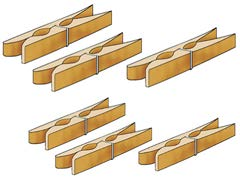
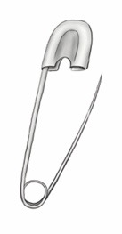
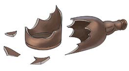
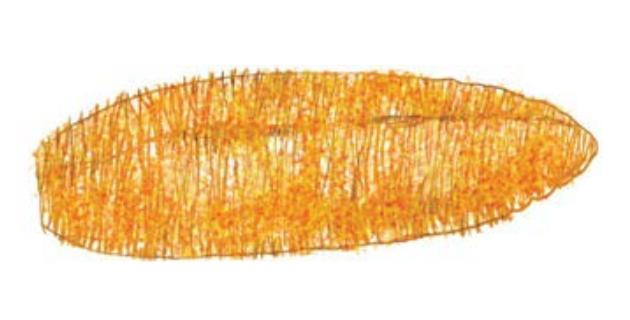
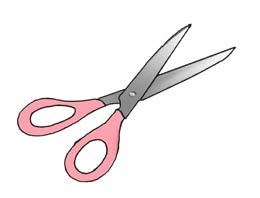
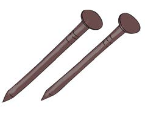

Zoezi la 1
Chunguza picha / tumia majina ya picha kisha andika majina ya vitu hatarishi ulivyovibaini.
(a)

(b)

(c)

(d)

(e)

(f)

| Vitu hatarishi | Vitu visivyo hatarishi |
|---|---|
Chunguza picha / tumia majina ya picha kisha andika majina ya vitu hatarishi ulivyovibaini.






| Vitu hatarishi | Vitu visivyo hatarishi |
|---|---|